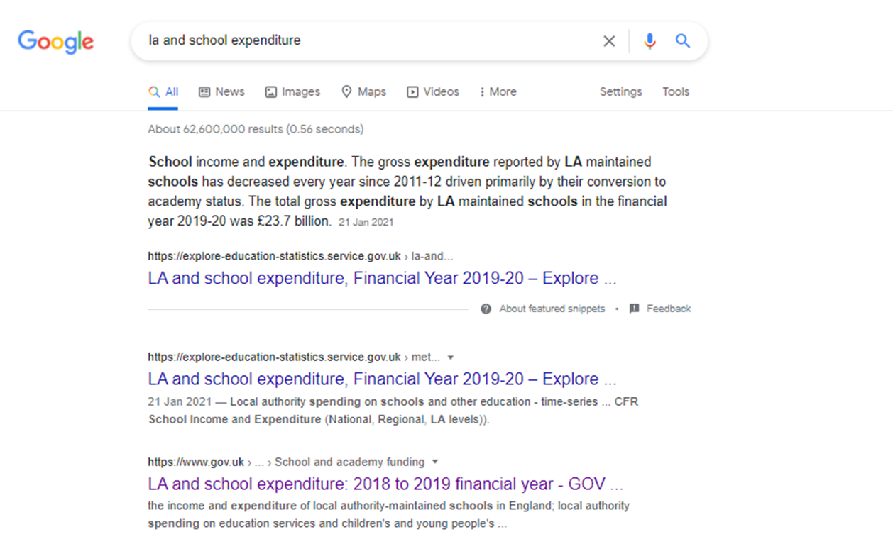
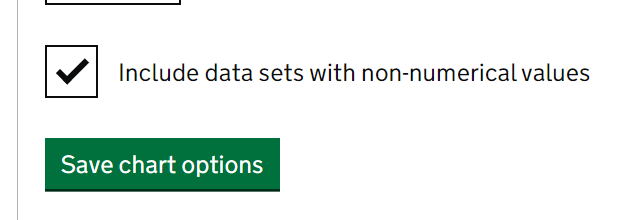

Writing and visualising
Things to consider when writing statistical commentary
Introduction
DfE publishes over 60 distinct Official Statistics collections each year, as well as numerous experimental and ad-hoc releases.
The layout, structure, and length of these releases vary significantly across the Department - making it confusing and hard to navigate across releases.
When writing content to a general audience, statisticians must explain the answers in words that the audience can understand.
Migration to a new statistics dissemination platform - Explore Education Statistics (EES) - presents an opportunity for publications to be reviewed and for the way this is communicated to be more consistent and accessible.
Teams should continually improve their publications, assessing against best practice using our content checklist.
All of our publications should be designed around our users first and foremost, and you should consider this page in conjuction with any user engagement activities you are carrying out.
We are running publication scrums where teams can put forward their publication(s) for review by a group of volunteer analysts, providing feedback as ‘unfamiliar new readers’ to discuss ideas for further improvements. For more information, see the publication scrums section.
Checklist
The guidance on content design is in the form of a handy checklist, co-produced with local statisticians, and supported by the Good Practice Team. This builds on ONS’s Best Practice guidance on Data Visualisation and Writing about Statistics.
The content checklist is for teams to use throughout their project cycle, so that good content design is at the heart of what they deliver at all stages, rather than considered late in the process - Content design checklist (.xlsx).
There is also a dashboards version of the content design checklist, that runs through a number of things to think about when developing dashboards to compliment official statistics - Dashboards checklist (.xlsx).
Publication summaries
Publication summaries are a key tool in helping users find the statistics that they’re looking for. We use them on gov.uk pages and in the EES find statistics page.
Like on gov.uk, you only have 181 characters – to make sure you are fully utilising these, have a look through the following advice:
Use plain language to use terms and phrases that users are likely to use e.g. gender pay gap versus Annual Survey of Hours and Earnings.
Is it clear what the geographical coverage of this publication is e.g. England?
Is it clear how frequently the releases are published?
Is it clear what breakdowns you cover? E.g. Ethnicity, Gender, SEN?
Include the abbreviations but make sure to also write them out in full so that people can search for either, e.g. Free School Meals (FSM)
Avoid phrases like “This release covers” as this wastes characters and delays users getting to the main information.
Have you looked at the EES analytics to see what users key search terms on your publication are? Are key words front loaded In your summary?
Don’t waste space on including definitions of a topic within the summary.
Key Messages
Start by introducing the topic of your work and the questions you seek to answer with the numbers that follow. To help set the scene for your statistics, begin with a topic sentence that introduces the variables and the W’s (when, where and what).
Examples (NB. Fictional):
Poor: (No introductory sentence) “In 2020, there were 11,000 gun-related homicides (Figure 1)”
This jumps directly to presenting the data without orientating the reader to the topic and objectives.
Better: “What factors explain the observed rise and fall in overall homicides in England in the 2000s?”
This uses a rhetorical question to introduce the context (where and when) and the pattern to be investigated (the time trend). However, this does not specify the possible explanatory factors.
Best: “Was the substantial rise and fall in the number of homicides in the 2000s in England (Figure 1) observed across all age groups and types of weapons (Figure 2)?” There have been no numbers presented yet, just a statement that establishes the purpose of the statistics. Introducing your topic is important especially when presenting a series of charts or tables.
Below is a session by Robert Cuffe from the BBC talking to DfE statisticians about writing our publications and highlighting key messages in a way they can be used by journalists and the media.
Headline sections
It is common to use bullet points to draw out key headline messages, either for policy lines or for general interest. Here are some top tips for writing headlines:
- Ask yourself if this is the most important, useful and relevant point to make? Why? What is new?
- We recommend a maximum of six top headlines
- You shouldn’t be trying to summarise all the findings in the publication
- For regular publications, headlines won’t necessarily be the same every time
- Headlines should be a single sentence making a single point, and be able to stand alone from the publication
- Headlines should make sense to everyone and anyone (no jargon)
- Structure headlines as: what has happened; why is this important - don’t give numbers without context
- At least of your headlines should put the latest figures in the context of the longer-term change
- Round figures in headlines, you don’t need lots of decimal places
- If there is essential context for the headline facts then put this here
Writing content
For tips on creating accessible content have a look at our accessibility top tips (.docx)
Content headings
Throughout the commentary, active sub-headings outline the main messages making them memorable for users. They should be a short summary of the contents - aim for 10 words or less - rather than a full statistical headline. Avoid using exaggerated or sensationalist language that you would not use in your main commentary such as “highest ever” or “only”. Be neutral in selecting the message to use in the heading rather than favouring positive or negative messages.
Accordion section content
You should split your release into sections that each focus on one or two key messages, with a recommended maximum of 10 sections in the release. The whole release should take no more than 10 minutes to read. Our analytics app contains insights on how long it takes the average user to read your release.
To keep the release short only include information if there is something interesting to say - the commentary is there to tell a story, people looking for specific figures will use the table tool, or download the underlying data instead. Do not try to summarise every number in the commentary.
Avoid having large blocks of text as they are hard to read and users scan them and miss the detail. Graphs and tables break up the content but only include these where they add value; you do not need a graph or chart in every section.
Use plain English and shorter sentences, aim for an average of 15-20 words per sentence. Do not overload sentences with numbers and avoid ‘elevator commentary’ that describes small movements in the whole series without giving any insight (use a summary table instead if it is interesting, or leave it out entirely). Be impartial and objective; avoid using sensationalist terms or terms that reflect a judgement such as “very few” “only” or “strong”.
Explain complex concepts in plain English within the text. Remember that for many of our users, confidence intervals and significant differences are complex concepts that need explaining.
Do not use footnotes in the text of your content. They’re designed for reference in print, not web pages. Always consider the user need first. If the information in the footnotes is important, include it in the body text. If it’s not, leave it out.
Writing about characteristics
There is a wide range of guidance available from the GSS, ONS and the Cabinet Office around writing about characteristics. Statistics content published on EES should adhere to the principles outlined by the above. The data harmonisation champions group are in the process of collating the most recent guidance from all these sources and summarising it below.
If you need some steer on how to report on a particular characteristics, the below links provide some useful starting points:
You can also get in touch with the DfE Data Harmonisation Champions Group via statistics.development@education.gov.uk.
Writing about ethnicity
For the official names of ethnicity filters to use in data files, please check our guidance on creating statistics. The below outlines some key points in writing about ethnicity in publication content.
Ethnic minorities and not BAME
As outlined in the CRED report, grouping ethnicity at a higher level than the 5 major ethnic groups should be avoided as it risks masking the true disparities between, and/or life experiences of, people from different ethnic groups.
There will, however, be specific cases where data quality or comparisons with past metrics does not allow for statistics to be produced at the level of the major or minor ethnic groups. In these cases, the group ‘ethnic minorities’ should be used exclusively to refer to all ethnic groups except the White British group, this includes White minorities, such as Gypsy, Roma and Irish Traveller groups.
For comparisons with the White group as a whole, ‘all other ethnic groups combined’ or ‘ethnic minorities (excluding White minorities)’ should be used. It may also be necessary to refer to ‘White’ and ‘other than White’ if space is limited, but this should be avoided if possible.
Do not use the terms ‘non-White’, BAME (Black, Asian, and Minority Ethnic), or BME (Black and minority ethnic). These terms can be perceived as demeaning and can be confusing as to what groups are being included and excluded. For comparison with past metrics, BAME and BME should be replaced by the term “ethnic minorities (excluding White minorities)” unless White minorities were specifically mentioned.
Ordering of groups
There are several methods of ordering the ethnic groups, depending on where and how they are used:
Alphabetical: use in tables and when listing ethnic groups (with ‘Other’ and sometimes ‘Unknown’ as a final category)
In expected order of size (with largest first): useful in charts and visualisations as it makes data and patterns easier to read
Reporting and interpreting numbers
Reporting the numbers you work with is an important first step toward writing effective numeric descriptions. By including numbers in text, table or chart, you give the user the raw materials with which to perform comparisons across time, places or groups. However, if you stop there, you leave it to your readers to figure out how those data answer the question at hand.
Poor: “In 2010, there were 20, 370 overall homicides related to crime, 13,000 which were related to gun incidents, 7,370 related to other weapons. In 2020, they were 18,900 overall homicides, 11,000 which were related to gun incidents, 9,900 related to other weapons (Figure 1)”.
The description above simply lists statistics from charts without explaining how they relate to one another or how the statistics address the initial question in the opening paragraph.
Better: “The total number of homicides rose until the mid-2000s and then declined until 2020. As shown in Figure 1, the increase and subsequent decrease in homicides were driven by trends in gun-related homicides. In 2020, there was roughly 1.5 times as many homicides were committed with guns as with other types of weapons (11,000 versus 7265; Figure 1); whereas in 2010, roughly 2 times as many homicides were committed with guns versus other weapons, 13000 and 6500, respectively. Figure 2 examines whether gun-related homicides showed the same time trend among all age groups. As shown in Figure 2 in the two youngest groups of offenders, gun-related homicides increased substantially between 2000 and 2010, and then decreased steadily until 2020. In contrast, the number of gun related homicides committed by older offenders decreased slowly throughout the time-period shown”.
Try to use prose to summarise the patterns so your user can see the general relationship in the table or chart – the forest not the individual trees. Try not to report every number from the table or chart or pick a few arbitrary numbers to contrast in sentence form without considering whether or not those numbers represent an underlying general pattern. Paint the big picture rather than reiterating all the little details. This will help you tell a clear story with numbers as evidence.
Creating hyperlinks
Avoid using full URLs in text. Hyperlinks should be used and they should provide a clear description of the destination. Avoid using ‘For more information click here’. Screen readers often collate all links on a page into one list, so having numerous ‘click here’ links listed is confusing to the user and gives no description of the destinations. ‘For more information see Guidance to support the summer 2021 exams’ is an example of a good hyperlink.
Best practice on creating hyperlinks, particularly how to name them and common pitfalls to avoid can be found on this introduction to html guide. Those of us using EES don’t need to worry about writing the raw html for the anchor links, and should instead focus on the section referring to how to name and title links.
Search engine optimisation
Search engine optimisation (SEO) makes it easier for users to find your data through search engines like Google. Some top tips include:
Keeping your release title shorter than 50-60 characters. This means the full title can be displayed on the search engine results
Avoid listing key words: search engines penalise anything not recognised as a full sentence.
Make use of our analytics app to explore what your users are doing: what accordions are they clicking on, what are they searching for? This could give an idea of what content you should focus on in future, and which areas are no longer of interest to most of your users.
Following best practice in writing about statistics is of increasing importance. As shown in the below example any sentence could be pulled out into a snippet and shown in a search engine to users who are searching for related information:

We should make a concerted effort to ensure that we are answering the questions people are interested in as search engines are getting smarter and pulling this information directly out of webpages. See the following example of a google search using a snippet from one of our publications as an answer in the search engine results itself:

Data visualisation
EES allows you to build charts and tables to visually represent information from your release, this can be particularly helpful to show trends over time, across geographies or highlight interesting stories in the data.
Visualisation titles
For tables and charts, active titles are descriptive and tell the trend by highlighting the main story. They should be short - aim for 10 words or less and avoid going over more than one line. Active titles give users the main message without having to find the text that accompanies the chart, and makes it easier for journalists to use your chart directly without having to write their own summary.
Put information such as the measure, source, population, geographical coverage and time period in a caption if they are not obvious from the chart content. Add further context and information in the main text. Remember that tables and charts should be usable even if isolated from the rest of the release.
Using data blocks effectively
Aim for fewer tables, and keep them small. As a guide, we suggest no more than one table per accordion section.
Presentation tables are the tables you include within the accordion sections of your release to quickly visualise numbers. Unlike the underlying data files, the presentation tables focus on specific parts of the story you are telling. They are distinct from, and should never be a copy of an underlying data file.
You should only be including small tables sparingly where they add value to your release and not use them as a straight copy of the ready-made Excel tables previously published on gov.uk. The data itself is there for users to access through other means, therefore any data in the commentary should only be there if it is enhancing the story.
You do not need to recreate all of the old excel tables, users can find the numbers they are interested in using the table tool, or analyse the underlying data if they want the data behind the release.
Charts in EES
Any charts in your release should be appropriate for the data, reinforcing the key messages. For more detailed information on how to build charts in EES, visit our EES charts guidance section.
Any analyst building charts in or outside of EES should make themselves familiar with the [GSS data visualisation guidance](GSS colours in visualisations guidance.
More complex charts cannot currently be built in EES. You should only use complex charts where there is a clear user need, as simple charts are the easiest for users to understand. Please see the ONS guidance for visualisations or contact the Statstics Development Team if you’re considering a more complex chart built outside of EES.
DWP have created a Data Visualisation Thinking course that may be useful to look at when creating more complex charts.
Colours in charts
The most important consideration when using colour is to avoid relying on it for interpretation. It should be seen as an enhancement, and your charts should be understandable without it.
For any charts made outside of EES you should use the suggested colours from the GSS colours in visualisations guidance. The following sections show the colours that are available for charts in EES and suggest the way to use them with one another, more detail on why can be found in the GSS guidance itself.
We strongly recommend you stick to the codes as outlined, if you can’t for any reason, please make sure you follow the guidance on developing your own colour palette and get in touch with us so we can understand why.
Categorical colour palette
Categorical data can be divided into groups or categories by using names or labels. This palette has four colours. We recommend a limit of four categories as best practice for basic data visualisations. The ordering of the palette is important as not all colours are accessible when paired together.
| Colour name | Hex code | RGB | CYMK |
|---|---|---|---|
| Dark blue | #12436D | 18, 67, 109 | 36, 16, 0, 57 |
| Turquoise | #28A197 | 40, 161, 151 | 75, 0, 6, 37 |
| Dark pink | #801650 | 128, 22, 80 | 0, 83, 38, 50 |
| Orange | #F46A25 | 244, 106, 37 | 0, 57, 85, 4 |
Sequential colour palette
Sequential data is any sort of data where the order of series has some meaning. For example, age groups ascending in age. This palette has three colours and even this pushes the boundaries for contrast ratios. Any charts made with shades of a specific hue should be accessible without colour.
| Colour name | Hex code | RGB | CYMK |
|---|---|---|---|
| Dark blue | #12436D | 18, 67, 109 | 36, 16, 0, 57 |
| Mid blue | #2073BC | 32, 115, 188 | 0, 57, 85, 4 |
| Light blue | #6BACE6 | 107, 172, 230 | 75, 0, 6, 37 |
Focus palette
On focus charts, colour is used to highlight specific elements to help users understand the information. One line out of many will be highlighted as a colour and the rest of the series remain grey.
| Colour name | Hex code | RGB | CYMK |
|---|---|---|---|
| Dark blue | #12436D | 18, 67, 109 | 36, 16, 0, 57 |
| Grey | #BFBFBF | 191, 191, 191 | 0, 0, 0, 25 |
Larger palettes
All charts should be made as simple as possible so that the message is easy to understand and interpret.
If you do want to use additional colours you need to ensure that the chart is understandable without colour as no series with more than four colours will ever be fully accessible alone.
For categorical data, we recommend the following extensions to the categorical palette. Once again, the ordering is important. If you’re making a chart in EES these are not default colours, so you will need to use the colour picker to specify them.
| Colour name | Hex code | RGB | CYMK |
|---|---|---|---|
| Dark blue | #12436D | 18, 67, 109 | 36, 16, 0, 57 |
| Turquoise | #28A197 | 40, 161, 151 | 75, 0, 6, 37 |
| Dark pink | #801650 | 128, 22, 80 | 0, 83, 38, 50 |
| Orange | #F46A25 | 244, 106, 37 | 0, 57, 85, 4 |
| Dark grey | #3D3D3D | 61, 61, 61 | 0, 0, 0, 76 |
| Light purple | #A285D1 | 162, 133, 209 | 22, 36, 0, 18 |
For larger palettes when using sequential data, we recommend using ColorBrewer to find the hex codes for multiple shades of a given hue.
Visualising breaks in a timeseries
We recommend including any missing data from breaks in a time series in your data file using the appropriate GSS symbol, such as in this example table:
| 2013/14 | 2014/15 | 2015/16 | 2016/17 | 2017/18 | |
|---|---|---|---|---|---|
| Number of pupil enrollments | 3,627,985 | 3,713,774 | 3,796,146 | x | 3,885,774 |
| Number of schools | 16,705 | 16,723 | 16,736 | x | 16,739 |
There may be times when including missing data increases the file size too much, or becomes unwieldy, if you’re unsure and would like advice on your data contact statistics.development@education.gov.uk.
By including the missing data in your open data files you can then create charts in EES that represent this. Start off by creating a data block with the data you want to build the chart from.

On the chart configuration tab there is a toggle for visualising non-numeric values in the data as 0. On the first chart configuration tab, there’s a check box that will toggle between showing and hiding them.

When selected, you will then see that this data appears in the chart as if the indicator values are 0.

Writing methodology
Appropriate methodological information should be made available for all published Official Statistics releases.
You are able to create these methodology documents within the Explore Education Statistics platform and then can attach them to relevant releases.
It is recommended that you write your methodology document as a .html page on the platform. If you do not have time to do this, you can either contact us to help you with that, or you can upload a PDF version. If you are uploading a pdf version then you need to make sure this is accessible.
For releases that have a .html methodology page the relevant link will display as an accordion section under the “help and support” section.
Glossary
The glossary in Explore Education Statistics is intended for definitions used across all publications. Please send any definitions you would like adding to the glossary to the Statistics Development Team.
Once definitions have been added, you can add them as URL links into your commentary. E.g. to see the definition for ‘Otherwise vulnerable’, you’d make that phrase a hyperlink, and use https://explore-education-statistics.service.gov.uk/glossary#otherwise-vulnerable as the link.
Before creating a new definition, check the glossary to see if one is already there. When creating glossary entries you should use standard DfE definitions, only write your own if it is something that relates specifically to your statistics. Do not use technical terms in your definition, stick to plain English.
Include essential definitions in the commentary where they are relevant, you should not expect users to go to the glossary or about these statistics section for information they need to understand the statistics. Do not use the glossary to explain methodology such as classification decisions, explain these in the text if essential or otherwise in the methodology document.
Advice and support
There are no hard rules to follow on content design and the layout of individual statistics releases will vary. Publication teams have the power to use the above guidance to ensure your statistics are as accessible and understandable as possible.
We’re all well-practiced at breaking complex results down into simple messages whether it’s for inducting new starters, providing briefing for new Ministers, or explaining our work for friends and family - we just need to apply the same standards to our headline reporting.
For those looking for more targeted advice and support there’s a DfE Content Design Champions Group and we’re open to offering direct feedback and scrum sessions to review publications if there’s sufficient demand. Contact the Statistics Development Team if you’re interested in these or would like any advice.
More detailed advice and guidance on content design best practice is available from a number of resources across Government and beyond:
- GSS best practice guidance
- GSS best practice hints and tips
- UNECE drafting guidance
- This link provides details on how to get readability scores on your drafting in Word.
- Similarly, the Hemingway app is an online tool to assess readability. Whilst we might not want to use this directly for final drafting, it is useful to highlight areas of particular complexity in our current narrative. Additionally, the GSS Good Practice team set an exercise to try to write about your results without using any numbers: this can be really helpful to help understand the story you’re trying to tell with your statistics.
- As an illustrative example of work in other Departments - DWP’s Fraud & Error statistics before (128 page release), and after their own modernisation work are worth a look.
Publication scrums
The Statistics Services Unit organise regular publication scrums, which enable publications to be looked at with fresh eyes through a workshop with volunteers and the publication team. The content checklist, which breaks down the components of producing Best Practice content into smaller chunks with prompt questions is used (Download content checklist), along with workshop slides.
If you are responsible for signing off publications, then please download and see the Statistics Leadership Group paper highlighting top tips for content design.
One of the early outcomes from running publication scrums, was that great content design is more of an art form than science and the scrum process was found to be really useful in enabling a wider element of scrutiny and friendly challenge, in an enjoyable environment to consider publication content.
You can experience how a scrum runs through watching this scrum-along (features the scrum up until groups breakout to discuss different elements) and supporting slides
A full before / after scrum along is available to watch, with slides available to download separately.
For a walk through of some of the end to end benefits the scrums have had, take a look at this video for Schools and pupils Statistics Team.
Finally, an example of a team who has been through the scrum process for 3 publications talk through their realised benefits, showcasing the type of benefits potentially others could also realise is also available to watch on sharepoint.
If you’re interested in being involved in future scrums, please get in contact us.